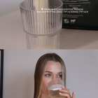
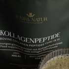
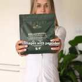
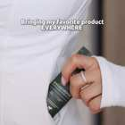

|
IG · Reels · WMN · 10.7
W | 30-55 | GERMANY
|
10 199 |
15 471 |
546 |
3,53% |
0,39 Kč |
214 Kč |
| ВыводСамая крупная кампания по бюджету (214,28 Kč) показала стабильный результат: охват 10 199, клик по 0,39 Kč, CTR 3,53%. Цена выше средней, потому что это основная кампания с долгим сроком показа и накопленной частотой 1,52. |
Объявления кампании
 Объявление 1 W | 30-55 | GERMANY 21 кликов · CTR 3,13% · CPC 0,45 Kč Объявление 2 W | 30-55 | GERMANY 1 кликов · CTR 3,03% · CPC 0,18 Kč  Объявление 3 W | 30-55 | GERMANY 524 кликов · CTR 3,55% · CPC 0,39 Kč
|
|
IG · Reels · WMN · 14.7
W | 30-55 | GERMANY
|
3 662 |
4 228 |
188 |
4,45% |
0,19 Kč |
36 Kč |
| ВыводКороткая кампания с лучшим соотношением цены и отклика: клик всего 0,19 Kč при CTR 4,45%. Низкая частота 1,15 означает, что аудитория видела объявления реже и реагировала активнее. |
Объявления кампании
Объявление 3 W | 30-55 | GERMANY 18 кликов · CTR 5,54% · CPC 0,29 Kč Объявление 2 W | 30-55 | GERMANY 109 кликов · CTR 5,26% · CPC 0,16 Kč Объявление 1 W | 30-55 | GERMANY 61 кликов · CTR 3,33% · CPC 0,21 Kč
|
|
IG · Reels · WMN · 27.7
W | 30-55 | GERMANY
|
6 601 |
7 900 |
337 |
4,27% |
0,18 Kč |
60 Kč |
| ВыводСильный результат при небольшом бюджете (60,14 Kč): охват 6 601, клик по 0,18 Kč, CTR 4,27%. Это самая выгодная кампания по стоимости клика, аудитория свежая (частота 1,2) и реагирует охотно. |
Объявления кампании
Объявление 3 W | 30-55 | GERMANY 81 кликов · CTR 5,95% · CPC 0,18 Kč  Объявление 2 W | 30-55 | GERMANY 10 кликов · CTR 3,89% · CPC 0,30 Kč  Объявление 1 W | 30-55 | GERMANY 246 кликов · CTR 3,92% · CPC 0,17 Kč
|
|
SALES · Test · 31.7
W | 30-55 | GERMANY
|
355 |
430 |
14 |
3,26% |
0,77 Kč |
11 Kč |
| ВыводТестовая кампания на переписки с минимальным бюджетом (10,78 Kč) и охватом 355 человек. Клик дорогой (0,77 Kč), потому что цель другая: не просто вовлечение, а начало диалога, что требует более глубокого действия от пользователя. |
Объявления кампании
Объявление 1 W | 30-55 | GERMANY 4 кликов · CTR 4,44% · CPC 0,42 Kč Объявление 3 W | 30-55 | GERMANY 10 кликов · CTR 2,94% · CPC 0,91 Kč
|